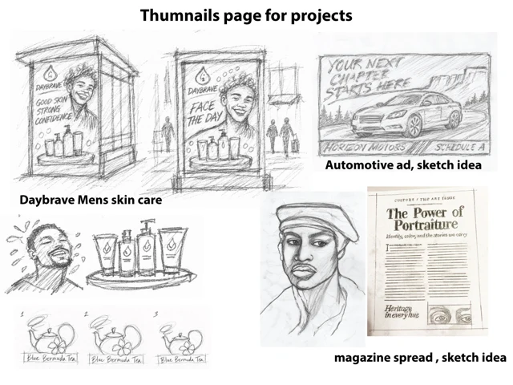
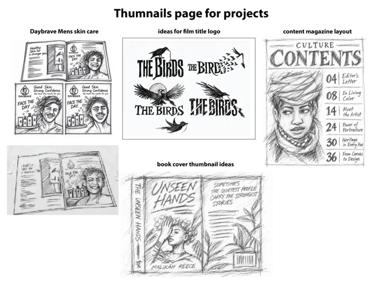

Project thumbnails
Two pages of original sketches exploring packaging, advertising, logos and publications.
View the sketch sheetsNine project categories across brand identity, packaging, publication design, advertising, logos, illustration and promotional video. Click any image to see that category’s work.

Two pages of original sketches exploring packaging, advertising, logos and publications.
View the sketch sheets
From discovery and research to refinement and delivery, see how an idea takes shape.
Explore the processAvailable for graphic design, publications, commissioned fine art and custom portraits. Tell me about your project and I’ll get back to you.
Start a project Call 469.554.6258